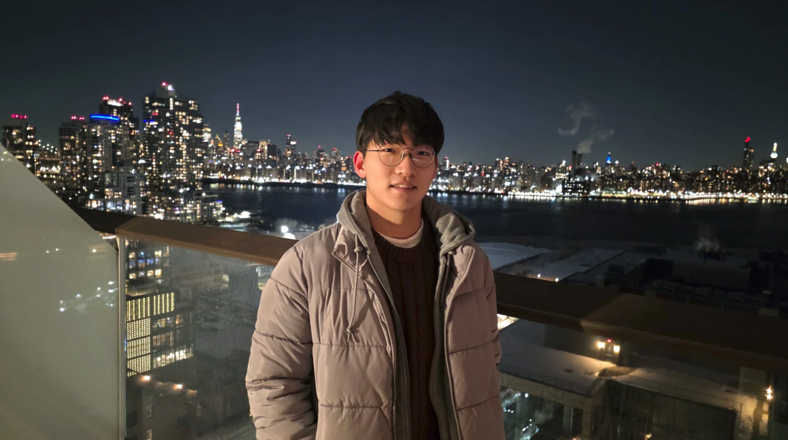
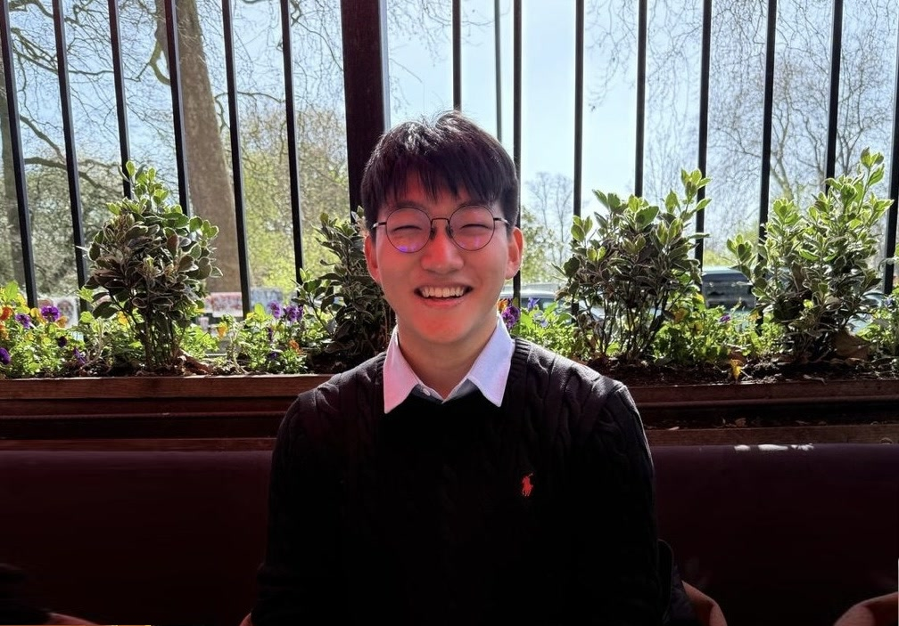

Hello, my name is Dawit Chun.
I want to make robots think and learn like us.
I’m a senior at Taejae University studying Data Science/AI and Natural Sciences, which I entered at 15. I love everything about robots, from good ol’ fashioned robotics to end-to-end models.
My long-term goal is a robot built for search-and-rescue. I’m a prospective PhD student for Fall 2027.
Deeply in love with
- Vision-language-action models
- World models
- Robot manipulation


Research vision
What does it mean to be intelligent?
Since my first year of university, one question has been behind everything I’ve worked on: what is so different about how humans think compared to robots? Intelligence is hard to define. Like “love,” we nod at the word and move on. But I believe finding the right definition is how we find the next path for robotics.

John Searle’s Chinese Room
Give the room a Chinese sentence, and the machine inside follows a huge rule book to produce a reply. From the outside, the person receiving it thinks, “this machine knows Chinese.”
That is exactly the part we need to figure out. Do robots know the world? Can they separate their own identity and compare it with the environment? Turing tried to answer this with the Turing test.
Douglas Hofstadter’s Gödel, Escher, Bach
My favorite book. Hofstadter says,
Intelligence is defined by the ease of switching between I (Intelligence) and M (Machine) Mode…


What I think robots are missing
An intelligent system can think out of the box, purposely putting itself out of distribution. Most robots today stay in M mode, repeating what they were trained on. So how does a robot get an “I” mode? I think it needs three things.
-
01
Isomorphic thinking
We decode new knowledge through what we already remember: “1, 2, 3, 4 …” can feel like walking up stairs. A robot should map the world onto its own embodiment the same way, knowing objects and actions by what they do to its body: contact, force, displacement. VLAs trained on demonstrations map pixels to actions instead, and in my tests one that succeeded at the center of a table failed a few centimeters off it. The robot’s own rollouts, through RL or teacher-student training, can help close that gap.
-
02
Intuition
Kahneman’s System 1: fast heuristics and gut feeling. For a robot, that could be a small forward model that predicts what each candidate action will do to its body and the scene before it moves, cheap enough to run at every step. Large language models in today’s robots mostly name the target or condition visual features. When instructions are scarce or vague, a robot should still infer what to do from its own predictions, without retraining.
-
03
Emerging Emotions
Emotions could emerge through parent-child relationships, since that is how we learn them: a parent soothes a crying baby until the child can calm itself. In a robot, an emotion could be a slow internal state that sets how boldly it explores, regulated first by a parent model and later by itself. In a full sensor suit, impact becomes pain, strain becomes fatigue, and low battery becomes hunger. Pain should weaken motors and add sensor noise rather than subtract reward, growing as the robot nears breaking, a mild form of death.
With this big dream in hand, I’ve been inserting (some) intelligence into machines!
ResearchLatest
News
My first-author paper PDPM, a morphable RISC-V pipeline, was accepted at IEEE ICCD 2026.
Joined the ROBOTIS Humanoid Software Team as a research intern, working on VLA and world models for manipulation.
Posted iPhoneme, brain-to-text communication for ALS, on arXiv.
Received the Talent Award of Korea from the Ministry of Education (top 0.0002% nationwide).